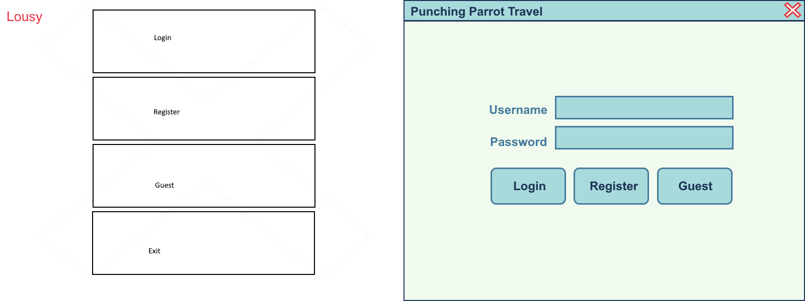

Using paint software, design the front end of a GUI application for your program. You will need at least 4 images, one for each state. Some states may have multiple panels, depending on your design. Add an image for each panel in your design. Begin with Login and Register. Then add the Customer and Employee views. The purpose of this exercise is to make coding the project easier. It also helps create a professional look to the program while avoiding some pitfalls that come with a design-as-you-go approach.
Below is a list of some things to incorporate into your design. All panels will need Cancel/Back/Logout buttons. Keep your layout flexible with room for expansion and added features. Avoid cramped designs.
- Login
- Text Field
- Password Field
- Submit Button
- Register Button
- Register
- Text Field
- Password Field
- Submit Button
- Password Requirements with criteria met indicators.
- Employee View
- List of Lodges
- Image thumbnail viewport. (room for at least 5 thumbnails )
- Buttons and Text Fields for adding, removing, and editing lodges. (May use separate panel(s)
- Checkboxes or Radio Buttons for Lodge boolean values
- Button for adding images
- Customer View
- List of Lodges
- Image thumbnail viewport. (room for at least 5 thumbnails )
- 6 Combo boxes for dates
- Button(s) for completing an order
- Receipt
The goal is to optimize the user's experience, not just convert the console program to a swing application. Here are lousy and better examples.
Label your images and paste them in a document. Do not zip it but submit it directly to canvas. You may then proceed to the mastery assignment.
The Document must use .odt (Open Office) or .doc(x) format
The document must be named accordingly. FirstNameLastNameMP#, where # is the module number. Example: JohnDoeMP1
Be sure to follow all rules listed in the course and in the syllabus.
Contact your instructor if you have any questions.